Table of Contents
Foreword
I haven’t been active for a while because of school and many other things (procrastination being one of them), but as I’ve returned to intern at a vulnerability research company, I’ve had the chance to look into some interesting vulnerabilities. I’ve wanted to learn Windows Kernel for the longest time so this was a pretty good opportunity to throw myself straight into it.
One particular vulnerability that caught my eye was CVE-2023-28252. It is a vulnerability that was exploited in-the-wild and had many different reports on it. Fortra published a POC and many companies (fortra, kapersky, google project zero, etc.) did an analysis on this, so I thought it would be a quick dive, but the more I looked into it, the more I realized 2 things:
- Existing writeups mostly approach it from a malware analysis point of view, not an attacker’s point of view
- No writeups actually understand the way to obtain the primitive
This is actually quite evident in a certain POC that I looked at, where values that didn’t need to be patched were being patched and the comments in the code were explaining things wrong. In fact, I know as a fact that it was copied from decompiled malware because there were obvious artifacts left inside like a RunPayload() function that was never called and variables like v53.
For the purposes of making the writeup less cluttered, the following “shorter” forms would be used:
Within CClfsBaseFilePersisted class:
CClfsBaseFilePersisted::WriteMetadataBlock -> WriteMetadataBlock
CClfsBaseFilePersisted::ReadMetadataBlock -> ReadMetadataBlock
CClfsBaseFilePersisted::ExtendMetadataBlock -> ExtendMetadataBlock
CClfsBaseFilePersisted::AddContainer -> AddContainer
CClfsBaseFilePersisted::AddSymbol -> AddSymbol
CClfsBaseFilePersisted::AllocSymbol -> AllocSymbol
CClfsBaseFilePersisted::OpenImage -> OpenImage
CClfsBaseFilePersisted::ReadImage -> ReadImage
CClfsBaseFilePersisted::CreateImage -> CreateImage
Within CClfsBaseFile class:
CClfsBaseFile::GetControlRecord -> GetControlRecord
CClfsBaseFile::FindSymbol -> FindSymbol
BLF
There are already many good resources out there detailing the Common Log File System (CLFS) driver internals such as Alex Ionescu’s clfs-docs and many more, but I will briefly walk through the structure of BLF files for the specific purpose of this vulnerability.
BLF files are created by CLFS and consists of 6 metadata blocks:
0x0 : Control
0x400 : Control Shadow
0x800 : Base
0x8200 : Base Shadow
0xFC00 : Truncate
0xFE00 : Truncate Shadow
The “shadow” blocks are backup copies of the main block and are used in case any corruption is detected in the main blocks.
Important offsets are as follows:
Control/Control Shadow
Control Block
* 0x4 → TotalSectors // Total no. of sectors (2)
* 0x6 → ValidSectors // No. of valid sectors
* 0x70 → DumpCount // Pseudo-"version" number, higher = newer
* 0x84 → eExtendState // CLFS_EXTEND_STATE enum
* 0x88 → iExtendBlock // Index of block being extended
* 0x8A → iFlushBlock // Index of block being flushed to disk
Control Shadow Block
* 0x406 → ValidSectors
* 0x470 → DumpCount
* 0x484 → eExtendState
* 0x488 → iExtendBlock
* 0x48A → iFlushBlock
CLFS_EXTEND_STATE : unsigned int32
{
ClfsExtendStateNone = 0x0,
ClfsExtendStateExtendingFsd = 0x1,
ClfsExtendStateFlushingBlock = 0x2,
};
Base/Base Shadow
Base Block
* 0x1B98 -> cbSymbolZone // Size of symbol zone
Base Shadow Block
* 0x9598 -> cbSymbolZone // Size of symbol zone
I strongly suggest going through the docs from above or other writeups for a more detailed explanation on file structure. However, the above knowledge is sufficient to understand the high-level concept behind CVE-2023-28252.
Analysis of The Vulnerability
High-level Overview
This vulnerability is caused by improper handling of exceptions leading to arbitrary increment that exists within the Windows clfs.sys driver.
Unlike what many analysis reports state, the root cause is not arbitrary read/write, heap overflow, OOB read/write, nor arbitrary increment. The arbitrary increment is a primitive that we can make use of due to the improper handling of exceptions within the WriteMetadataBlock function.
The vulnerability exists in the WriteMetadataBlock function. As the return value of ClfsEncodeBlock is not checked, even if it errors out, execution of WriteMetadataBlock will continue to completion and return a handle.
The way the exploit works is to make use of ClfsDecodeBlock’s CRC check to zero out the CRC of the CONTROL block, then making use of a subsequent WriteMetadataBlock -> ClfsEncodeBlock call to flush the invalid CONTROL block to disk, which in turn causes subsequent attempts to load the CONTROL record error out and use a malicious user-controllable CONTROL_SHADOW block instead.
This allows us to supplement our own iFlushBlock value, which is used to access an offset from a struct in kernel memory. This accessed value is then incremented, giving us our arbitrary increment primitive.
The Root Cause
Within ReadMetadataBlock, ClfsDecodeBlock is called, which would set the in-memory checksum of the CONTROL header to 0:
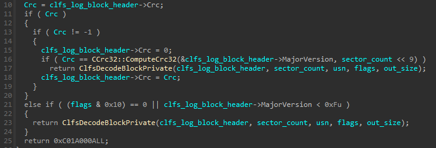
If decoding of the block is successful, the checksum would remain as 0 in memory while the block is being processed. The checksum is then calculated and set again before it is flushed to disk. We can see in WriteMetadataBlock, ClfsEncodeBlock is called, which in turn sets the checksum:
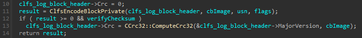
If any part errors out, the checksum remains at 0 and an error is returned. This is where the vulnerability happens. We look back at WriteMetadataBlock:
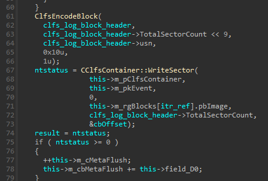
ClfsDecodeBlock is called and its return value is not checked! Execution would continue and CClfsContainer::WriteSector would execute, flushing the CONTROL block in memory to disk, including the zeroed out checksum.
The next time ReadMetadataBlock is called, it would fail when trying to read the corrupted CONTROL block (invalid checksum) and attempt to search for a CONTROL_SHADOW block. If the attacker supplies a valid CONTROL_SHADOW block with a malicious iFlushBlock value, it will be loaded into memory successfully and subsequently used by the driver.
Let’s explore the code path to understand how different parts of the code are reached and how the vulnerability can be used to achieve our primitive.
Code Path
Through debugging a skeleton application that only calls CreateLogFile, I found out that the execution path when creating a new log file is something like this:
CClfsLogFcbPhysical::Initialize
→ OpenImage
→ CreateImage
→ WriteMetadataBlock
OpenImage is not seen in the callstack when I was debugging but we can simply step through from CClfsLogFcbPhysical::Initialize and we will see that CreateImage is actually called through OpenImage
On the other hand, if CreateLogFile opens an existing file, it would be something like:
CClfsLogFcbPhysical::Initialize
→ OpenImage
→ ReadImage
→ ReadMetadataBlock
→ ExtendMetadataBlock // If eExtendState != ClfsExtendStateNone
→ WriteMetadataBlock // If eExtendState = ClfsExtendStateFlushingBlock
Even though the vulnerability is within WriteMetadataBlock, through debugging POCs I found online and playing around with CLFS I found out that the only way to ensure the CONTROL record is attempted to be read again (which would then load our malicious CONTROL_SHADOW into memory) after corrupting the CONTROL block with the first WriteMetadataBlock call is making sure that GetControlRecord is called.
We can look at the XREF for GetControlRecord in IDA:
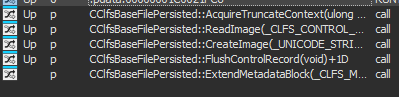
We can see above that ExtendMetadataBlock calls our desired function. In theory (and also seen in the ITW malware), we just need to ensure that we call ExtendMetadataBlock in order to guarantee our GetControlRecord and WriteMetadataBlock calls.
Thus, after we manage to obtain our patched BLF file one way or another, we would want to reopen it with CreateLogFile so that it would be read (thus corrupting the CONTROL block), then somehow reach ExtendMetadataBlock -> GetControlRecord -> WriteMetadataBlock again to load our malicious CONTROL_SHADOW into memory.
This can be done in user code by calling AddLogContainer and making sure that it calls ExtendMetadataBlock. Since we would have already called CreateLogFile to read and corrupt our CONTROL block, we can just use the handle returned by CreateLogFile to call AddLogContainer.
There is one caveat here: AddLogContainer does not call ExtendMetadataBlock by default, we need to somehow force it to also trigger ExtendMetadataBlock. We already know we can’t patch the BLF file again at this juncture since it has already been loaded into memory by CreateLogFile, so we have to take a look at the code execution flow of AddLogContainer. I found out that it was something like this:
Win32 API AddLogContainer
→ CClfsLogFcbPhysical::AllocContainer
→ AddContainer
→ AddSymbol
→ FindSymbol (returns 0xC0000023) // Obtained from AllocSymbol
→ AllocSymbol (returns 0xC0000023)
→ ExtendMetadataBlock { This part is only reachable if error 0xC0000023
→ WriteMetadataBlock { is returned
In CClfsLogFcbPhysical::AllocContainer:
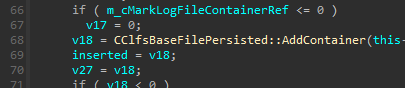
In AddContainer:
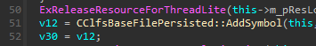
We take a look at AddSymbol in IDA:
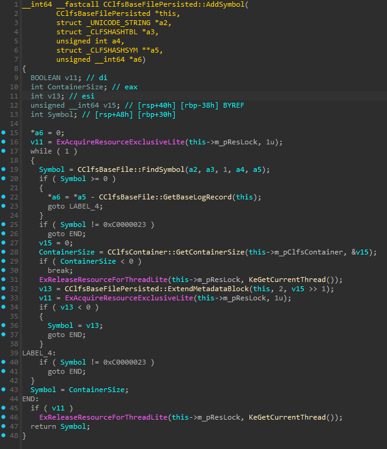
We see that on line 19, it calls FindSymbol and saves the result to a variable, and it then checks whether the result is >= 0. If the result has no error (>= 0), it jumps to LABEL_4 which then jumps to END, skipping past ExtendMetadataBlock entirely. Since we want it to execute ExtendMetadataBlock, we need to get a specific error (0xC0000023) on FindSymbol, since the return result is checked again against 0xC0000023 on line 25, jumping to END if it isn’t equal.
Taking a look at FindSymbol, we can see many different error codes, but 0xC0000023 seems to be missing. There is however one line of code that we can see:
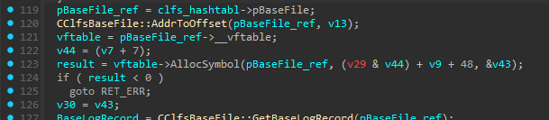
It calls a function from the input vftable called “AllocSymbol”. While a search in IDA we can find CClfsBaseFilePersisted::AllocSymbol, we can’t be completely sure, so we hop into the debugger and set a breakpoint at FindSymbol, we can see the vftable being passed in:
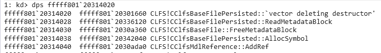
At offset 0x18, we see CClfsBaseFilePersisted::AllocSymbol.
Looking inside AllocSymbol:
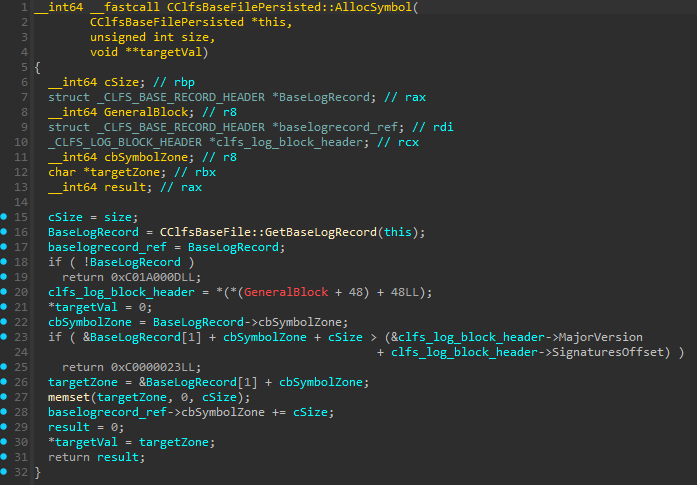
We can now see 0xC0000023 being returned if we fail the check at line 23. In order to fail the check, we just have to make sure cbSymbolZone + cSize puts the pointer past the end of the current block.
One thing to note is that within OpenImage, we can see that in order for ExtendMetadatBlock to be called, eExtendState needs to be != 0 or the function would just end:
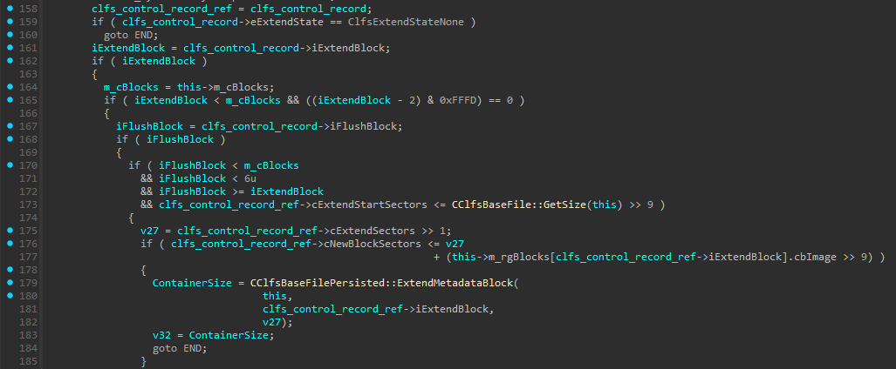
Where ClfsExtendStateNone is the enum for 0.
We can also see that it checks the values of iExtendBlock and iFlushBlock such that in order to reach ExtendMetadataBlock we would have to ensure
iExtendBlock> 0 andiFlushBlock> 0iExtendBlock< 6iFlushBlock< 6 ANDiFlushBlock>=iExtendBlockcExtendStartSectors< Total no. of sectorscNewBlockSectors< Total no. of sectors + sectors to extend
4 and 5 are automatically ensured for us as long as we don’t tamper with it, so we just need to ensure iExtendBlock and iFlushBlock meet the requirements.
Within ExtendMetadataBlock, we can see this block that checks for eExtendState:
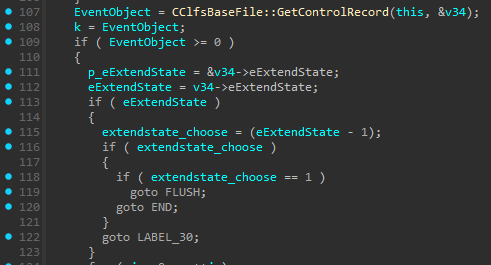
Where the label END leads to ExtendMetadataBlock finishing execution and FLUSH leads to:
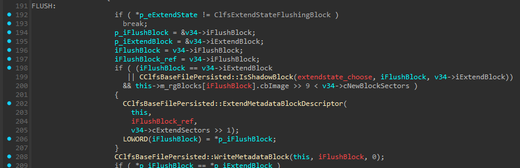
This is the WriteMetadataBlock that we need to reach, since as seen above we must have eExtendState != 0. We can also then see on line 192 above that we must have eExtendState = ClfsExtendStateFlushingBlock in order for the code to proceed.
Now that we know how to trigger our desired code path twice, let’s understand the primitive that can be used to exploit this.
The Primitive
The primitive that was used here lies within the WriteMetadataBlock function. After obtaining an offset to a metadata block (CONTROL, BASE, etc.), the code attempts to increment header->ullDumpCount, whose offset is stored at header->RecordOffsets[0] (fixed at 0x70):
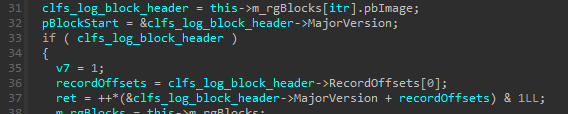
Within ExtendMetadataBlock, iFlushBlock is passed into WriteMetadataBlock as itr, which is used to obtain an address from m_rgBlocks. pbImage exists at offset 0 of m_rgBlocks, and m_rgBlocks is a struct of 0x30 size in memory. Thus, with this, we are able to reference an arbitrary address in memory.
MajorVersion here is just offset 0 of clfs_log_block_header, so it can be treated as a pointer to the start of the struct.
Since RecordOffsets[0] is always 0x70 for metadata blocks, in line 37 we have an arbitrary increment on our controllable location of clfs_log_block_header + 0x70.
Crafting a POC
To craft a POC, recalling from the analysis, we have to do the following things:
-
Create a log file that we can work with
-
Patch the log file (Offset -> Name in struct)
CONTROL Block
- 0x6 → Control.ValidSectors: 1
- This causes
ValidSectors < TotalSectors, failingValidSectors == TotalSectorscheck - Causes ClfsDecodeBlock to fail
- Leaves zeroed checksum in memory
- This causes
- 0x70 → Control.DumpCount: 2
- Must be >= ControlShadow.DumpCount
- This ensures CONTROL block is attempted to be read first, corrupting the checksum
- 0x84 → Control.eExtendState: 2
- We use enum ClfsExtendStateFlushingBlock to pass the checks in
OpenImageandExtendMetadataBlock - This lets us reach
WriteMetadataBlock
- We use enum ClfsExtendStateFlushingBlock to pass the checks in
- 0x88 → Control.iExtendBlock: 2
- Nonzero value n, 1 < n < 6
- By default, there are 2 blocks, so indexes 0 and 1 already exist
- 0x8A → Control.iFlushBlock: 2
- Nonzero value n, 1 < n < 6, n >=
iExtendBlock - We set this to be equals to
iExtendBlocksuch that execution ends upon one execution ofWriteMetadataBlock
- Nonzero value n, 1 < n < 6, n >=
- 0x94 → Control.cExtendSectors: 1
- Must be >= 1 to trigger
ExtendMetadataBlock
- Must be >= 1 to trigger
CONTROL_SHADOW Block:
- 0x6 → ControlShadow.ValidSectors: 2
- Ensure that it matches TotalSectors to pass
ValidSectors == TotalSectorscheck
- Ensure that it matches TotalSectors to pass
- 0x470 → ControlShadow.DumpCount: 1
- Must be <= Control.DumpCount
- This ensures CONTROL block is attempted to be read first
- 0x484 → ControlShadow.eExtendState: 2 (same as CONTROL)
- 0x488 → ControlShadow.iExtendBlock: 0xBEEF
- Can be any malicious value
- 0x48A → ControlShadow.iFlushBlock: 0xDEAD
- Can be any malicious offset
BASE Block:
- 0x1B98 → BaseBlock.cbSymbolZone: 0x6543
- Must be a value large enough to cause
AllocSymbolerror0xC0000023 - Cannot be too large or it will be caught by other code
- Must be a value large enough to cause
BASE_SHADOW Block:
- 0x9598 → BaseShadow.cbSymbolZone: 0x6543 (same as BaseBlock)
- 0x6 → Control.ValidSectors: 1
-
Call
CreateLogFileto corrupt CONTROL block -
Call
AddLogContaineron returned handle to get OOB increment
In my POC, I do the following:
- Call
CreateLogFilewithOPEN_ALWAYSto create a log file - Open the log file with
fopenand patch values as seen above - Call
CreateLogFileagain to open the patched log file, and keep the handle - Call
AddLogContaineron the handle from #3
We can step into the debugger and see our malicious iExtendBlock and iFlushBlock in memory by setting breakpoints at ExtendMetadataBlock, GetControlRecord and WriteMetadataBlock, then once we reach ExtendMetadataBlock -> GetControlRecord -> WriteMetadataBlock, we take the value in $rcx (CClfsBaseFilePersisted object), examine the object and take the value at offset 0x30 (pbImage), then examine the pointer at either offset 0x0 or 0x30 (rgBlocks array -> CONTROL/CONTROL_SHADOW struct pointer) to see the contents of CONTROL loaded into memory.
2: kd> dps ffffc607`1568d280 l12
ffffc607`1568d280 00020002`00010015
ffffc607`1568d288 00000000`00000000
ffffc607`1568d290 00000000`00000002
ffffc607`1568d298 ffffffff`00000000
ffffc607`1568d2a0 ffffffff`00000000
ffffc607`1568d2a8 00000000`00000070
ffffc607`1568d2b0 00000000`00000000
ffffc607`1568d2b8 00000000`00000000
ffffc607`1568d2c0 00000000`00000000
ffffc607`1568d2c8 00000000`00000000
ffffc607`1568d2d0 00000000`00000000
ffffc607`1568d2d8 00000000`00000000
ffffc607`1568d2e0 00000000`00000000
ffffc607`1568d2e8 00000000`000003f8
ffffc607`1568d2f0 00000000`00000001
ffffc607`1568d2f8 c1f5c1f5`00005f1c
ffffc607`1568d300 00000002`00000001
ffffc607`1568d308 00000000`deadbeef <-- We see our malicious values here
We can see that after the magic number, in the area where iExtendBlock and iFlushBlock is supposed to be, deadbeef sits in memory.
Afterword
This was a fun and tiring journey as many writeups online lead to dead ends and incorrect information. I was finally able to find a writeup that explained the vulnerability from an attacker’s point of view which helped greatly, though at that point I was already on the cusp of finding out the information myself.
Huge thanks to all the public resources out there, they assisted me greatly when I was learning CLFS internals.
That’s all for now, maybe when I find something interesting again and stop procrastinating I’ll write another post.
Thanks for reading.
References (non-exhaustive)
- Unofficial CLFS Documentation
- https://github.com/fortra/CVE-2023-28252/tree/master?tab=readme-ov-file
- https://bbs.kanxue.com/thread-278241.htm
- https://securelist.com/windows-clfs-exploits-ransomware-cve-2023-28252/111601/
- https://securelist.com/nokoyawa-ransomware-attacks-with-windows-zero-day/109483/
- https://github.com/726232111/CVE-2023-28252/tree/main
- https://ti.qianxin.com/blog/articles/CVE-2023-28252-Analysis-of-In-the-Wild-Exploit-Sample-of-CLFS-Privilege-Escalation-Vulnerability/